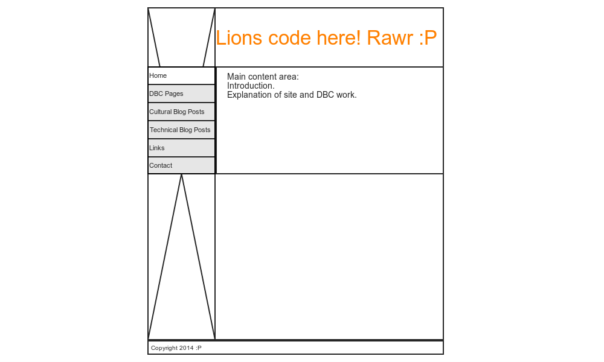

My Wireframe ideas
Sunday, May 4 2014
- the sidenav that is selected to remain a different color, indicating to the user where they are on the site
- and for a dynamic list of contents to be pulled up in the content area in the side. If the contents exceed the length of the sidenav bar, I'd like the content area to contain a scroll button that users can use to browse within the content area box.
For the landing page
